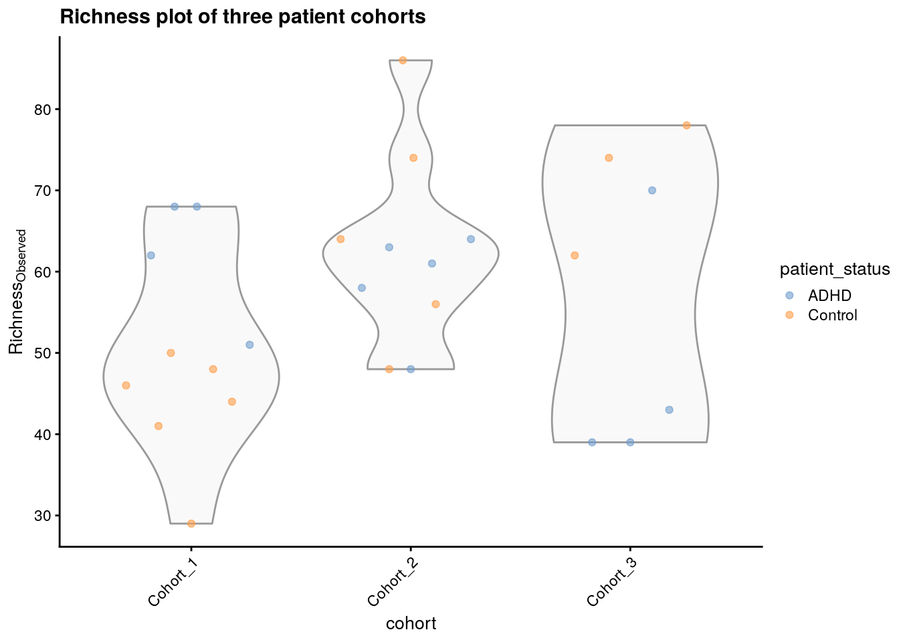
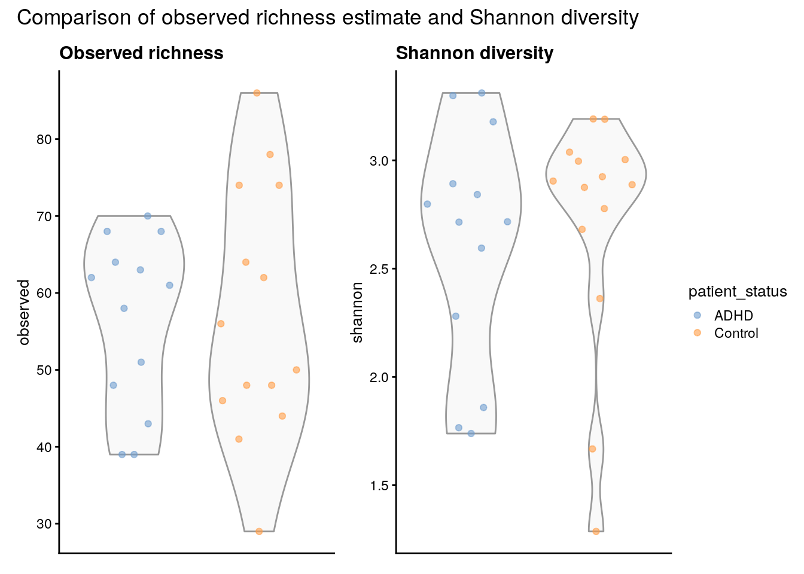
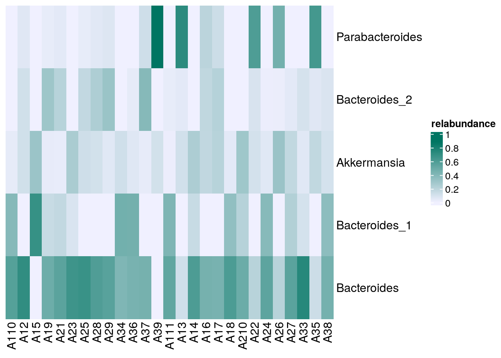

26 Introductory
 Dutch
Dutch 
26.1 Introduction
Hello and welcome to a complete workflow using the latest R/Bioconductor tools for microbiome data science. In this tutorial we’ll walk you through some basic steps of a composition analysis study using OMA. These will be applicable to almost any of your projects and will help you understand the fundamental concepts that will sky-rocket 🚀 your future microbiome analyses.
26.2 Importing data
When using microbiome packages, there are many different ways to import your data. Let’s first load the required packages:
# List of packages that we need
packages <- c(
"ggplot2", "knitr", "mia", "dplyr", "miaViz", "vegan", "DT",
"scater", "patchwork", "sechm", "plotly"
)
# Get packages that are already installed installed
packages_already_installed <- packages[ packages %in% installed.packages() ]
# Get packages that need to be installed
packages_need_to_install <- setdiff( packages, packages_already_installed )
# Loads BiocManager into the session. Install it if it not already installed.
if( !require("BiocManager") ){
install.packages("BiocManager")
library("BiocManager")
}
# If there are packages that need to be installed, installs them with BiocManager
# Updates old packages.
if( length(packages_need_to_install) > 0 ) {
install(packages_need_to_install, ask = FALSE)
}
# Load all packages into session. Stop if there are packages that were not
# successfully loaded
pkgs_not_loaded <- !sapply(packages, require, character.only = TRUE)
pkgs_not_loaded <- names(pkgs_not_loaded)[ pkgs_not_loaded ]
if( length(pkgs_not_loaded) > 0 ){
stop(
"Error in loading the following packages into the session: '",
paste0(pkgs_not_loaded, collapse = "', '"), "'")
}You can either choose to use your own data or one of the built-in datasets provided by mia which you may find here Section 4.2:
In this tutorial, we’ll be using the C Tengeler et al. (2020) dataset. This dataset was made by A.C. Tengeler to try to demonstrate the impact of altered microbiomes on the brain structure. Here’s how we can load the data into our R environment:
data("Tengeler2020", package="mia")
tse <- Tengeler2020There are of course other ways to import your data using the mia package. These include: using either your own data Section 4.1.2 or by converting an existing object to a TreeSummarizedExperiment object as stated in this section Section 5.1.
26.3 Storing microbiome data
TreeSummarizedExperiment or TreeSE object is the type of object used within the mia package to store your data. It’s a versatile and multi-purpose data type that allows for an efficient way to store and access data.
Here’s a quick reminder on how to access certain types of data:
You can access assays Section 3.2 as such:
assay(tse)[1:5,1:10]
## A110 A12 A15 A19 A21 A23 A25 A28 A29 A34
## Bacteroides 17722 11630 0 8806 1740 1791 2368 1316 252 5702
## Bacteroides_1 12052 0 2679 2776 540 229 0 0 0 6347
## Parabacteroides 0 970 0 549 145 0 109 119 31 0
## Bacteroides_2 0 1911 0 5497 659 0 588 542 141 0
## Akkermansia 1143 1891 1212 584 84 700 440 244 25 1611Whereas colData Section 6.3 is accessible through:
# Transform the colData to a dataframe
tse_df_colData <- as.data.frame(colData(tse))
# Show as an interactive table
datatable(tse_df_colData,options = list(pageLength = 5),rownames = FALSE)*rowData** Section 3.4 contains data on sample characteristics, particularly taxonomic information.
tse_df_rowData <- as.data.frame(rowData(tse))
datatable(tse_df_rowData, options = list(pageLength = 5))Here rowData(tse) returns a DataFrame with 151 rows and 7 columns. Each row represents an organism and each column a taxonomic level.
To illustrate the structure of a TreeSummarizedExperiment, here’s an article of Huang et al. (2021) that uses this type of object. Also, please take a look at figure 1 below.

26.4 Wrangling the data
In some cases, you may need to change your data in order to get your wanted results. In this section we’ll go over how to agglomerate data, subset your data and more. A TreeSummarizedExperiment allows for some neat data manipulation using the dplyr package.
26.4.1 Subsetting
In some cases, you may only need to use part of your original TreeSummarizedExperiment.
Using the Tengeler2020 dataset, we can focus on a certain cohort for example. Doing this is pretty straightforward:
tse_subset_by_sample <- tse[ , tse$cohort =="Cohort_1"]This will create a TreeSummarizedExperiment object only containing samples of the first cohort.
26.4.2 Agglomerating data
To further push your data analysis and focus on its distribution at a specific taxonomic rank, it can be beneficial to agglomerate your data to that particular level. The agglomerateByRank function simplifies this process, enabling more streamlined and effective analyses. Here’s an example:
tse.agglomerated <- agglomerateByRank(tse, rank='Phylum')
# Check
datatable(data.frame(
rowData(tse.agglomerated)),options = list(pageLength = 5),rownames = FALSE)Great! Now, our data is confined to the taxonomic information up to the Phylum level, allowing the analysis to be focused on this specific rank. In the rest of the workflow, we won’t be using the agglomerated data but all of the code beneath can be used on this.
26.5 Metrics
26.5.1 Community Diversity
Community diversity in microbiology is measured by several indices:
- species richness (total number of species)
- equitability (distribution of species within a microbiome)
- diversity (combination of the two)
The coefficient of Hill (1910) combines these measures into a single equation. All these variations are referred to as alpha diversity.
# Estimate (observed) richness
tse_alpha <- addAlpha(
tse,
assay.type = "counts",
index = "observed",
name="observed")
# Check some of the first values in colData
head(tse_alpha$observed)
## [1] 68 51 68 62 58 61The result is showing the estimated richness values for different samples or locations within the dataset. It gives an idea of how diverse each sample is in terms of the number of different species present. We can then create a graph to visualize this.
plotColData(
tse_alpha,
"observed",
"cohort",
colour_by = "patient_status") +
ggtitle("Richness plot of three patient cohorts") +
theme(axis.text.x = element_text(angle=45,hjust=1)) +
labs(y=expression(Richness[Observed]))
To go even further, we can also compare the estimated Shannon index to the observed richness. Shannon quantifies the diversity in terms of both the number of different species (richness) and the evenness of their distribution (abundance) and is calculated as such:
\[ H' = -\sum_{i=1}^{R} p_i \ln(p_i) \] pi being the proportion of a certain microorganism.
First, we can easily calculate this measure and add them to our TreeSE.
We can also compare the two measures of diversity by producing the following graphs.
# Create the plots
plots <- lapply(
c("observed", "shannon"),
plotColData,
object = tse_alpha,
x = "patient_status",
colour_by = "patient_status")
# Fine-tune visual appearance
plots <- lapply(plots, "+",
theme(
axis.text.x = element_blank(),
axis.title.x = element_blank(),
axis.ticks.x = element_blank()))
# Add titles to individual plots
plots[[1]] <- plots[[1]] +
ggtitle("Observed richness")
plots[[2]] <- plots[[2]] +
ggtitle("Shannon diversity")
# Plot the figures
patchwork <- (plots[[1]] | plots[[2]])
patchwork +
plot_layout(guides = "collect") +
plot_annotation(
title = "Comparison of observed richness estimate and Shannon diversity",
)
It’s very important to make all these comparisons in order to quantify diversity and compare samples in our data using different measures. - You can find other types of comparisons directly in the book Chapter 12.
26.5.2 Community similarity
Community similarity refers to the way microorganisms resemble each other in terms of their composition and abundance of different microbial taxa. This can help us understand to what degree different samples resemble each other and finding key information. In microbiome analysis however, it’s more common to measure the dissimilarity/Beta diversity between two samples A and B using the Bray-Curtis measure which is defined as follows:
\[ BC_{ij} = \frac{\sum_{k} |A_{k} - B_{k}|}{\sum_{k} (A_{k} + B_{k})} \]
Luckily for us, the mia package provides an easy way to calculate the relative abundance for our TreeSE using the transformAssay() method.
tse <- transformAssay(tse, assay.type = "counts", method = "relabundance")This will take the original counts assay and calculate the relative abundances. The result is a matrix with the sample identifiers as rows and the relative abundances for each taxon within those samples as columns. It can be accessed in the assays of the tse:
assay(tse, "relabundance")[5:10,1:10]
## A110 A12 A15 A19 A21 A23 A25
## Akkermansia 0.03057 0.046595 0.07539 0.014894 0.013226 0.1282 0.040124
## Bacteroides_3 0.00000 0.160112 0.00000 0.113619 0.096048 0.0000 0.047602
## Parabacteroides_1 0.00000 0.005470 0.00000 0.003290 0.004409 0.0000 0.002280
## Bacteroides_4 0.00000 0.089370 0.00000 0.019663 0.004566 0.0000 0.064654
## Bacteroides_5 0.00000 0.066061 0.00000 0.013542 0.006928 0.0000 0.055079
## Parabacteroides_2 0.00000 0.004632 0.00000 0.002907 0.005196 0.0000 0.002189
## A28 A29 A34
## Akkermansia 0.035930 0.014108 0.07693
## Bacteroides_3 0.075247 0.198646 0.00000
## Parabacteroides_1 0.003240 0.004515 0.00000
## Bacteroides_4 0.033574 0.134312 0.00000
## Bacteroides_5 0.064792 0.132054 0.00000
## Parabacteroides_2 0.002798 0.003386 0.00000Then we can add the Bray-Curtis dissimilarity :
# Run PCoA on relabundance assay with Bray-Curtis distances
tse <- runMDS(
tse,
FUN = vegdist,
method = "bray",
assay.type = "relabundance",
name = "MDS_bray")In our case, the assay contains 151 rows and 27 columns. Having so many columns and thus dimensions can be troublesome for visualizing dissimilarity.
In order to visualize the dissimilarity between the different samples, we can conduct a Principal Coordinate Analysis on the newly created assay. This essentially projects the Bray-Curtis dimensions onto a lower space whilst maintaining as much of the variation as possible, the projected values are called principal coordinates. You can read more on “Multidimensional Scaling” (n.d.) here.
mia provides some dimension reduction techniques, such as dbRDA. Additionally, we can use Bioconductor’s scater package and the vegan package, made by Oksanen et al. (2020) to turn the dissimilarity into actual distances that can be visualized:
# Create a ggplot object
p <- plotReducedDim(tse, "MDS_bray", colour_by = "cohort") +
ggtitle("Bray-Curtis dissimilarity using multidimensional scaling")
# Convert to an interactive plot with ggplotly
ggplotly(p)However, the axes are not very informative and the amount of captured variance by the algorithm is nowhere to be found. We can tweak the plot to show some more information as such:
# Calculate explained variance
e <- attr(reducedDim(tse, "MDS_bray"), "eig")
rel_eig <- e / sum(e[e > 0])
# Add explained variance for each axis on the plot
p <- p + labs(
x = paste("PCoA 1 (", round(100 * rel_eig[[1]], 1), "%", ")", sep = ""),
y = paste("PCoA 2 (", round(100 * rel_eig[[2]], 1), "%", ")", sep = "")) +
ggtitle("Bray-Curtis dissimilarity using multidimensional scaling")
# Reonvert to an interactive plot with ggplotly
ggplotly(p)There we have it! Each axis shows the amount of variance or in our case dissimilarity retained by each principal coordinate. You can additionally add more options to color by a certain characteristic for example. More on this can be found in Chapter 13.
26.6 Data visualisation using heatmaps
Heatmaps are one of the most versatile ways to visualise your data. In this section we’ll cover how to create a basic heatmap to visualise the most prevalent features using the sechm library. For a more detailed heatmap, please revert to this section Section 21.1 of the OMA book.
Then, let’s subset the TreeSE to the most prevalent taxa using an alternative experiment:
altExp(tse, "prevalence-subset") <- subsetByPrevalent(tse,prevalence=0.5)[1:5,]When subsetting with this function, the resulting object no longer contains the correct relative abundances because these abundances were originally calculated based on the full dataset, not the subsetted one. Therefore, we need to recalculate the values to reflect the subset accurately. For the sake of readability, we’ll also subset to the first five taxa after the initial subset.
altExp(tse, "prevalence-subset") <- transformAssay(
altExp(tse, "prevalence-subset"),
assay.type = "counts",
method = "relabundance")Now that we have prepared the data, we can use the previously loaded sechm library to plot the heatmap:
# Sets the colors
setSechmOption("hmcols", value=c("#F0F0FF","#007562"))
# Plots the actual heatmap.
sechm(
altExp(tse, "prevalence-subset"), features =
rownames(rowData(altExp(tse, "prevalence-subset"))),
assayName="relabundance",show_colnames=TRUE)
In the heatmap above, it is apparent that Parabacteroides are relatively common in some samples while Akkermansia is detected very seldom.